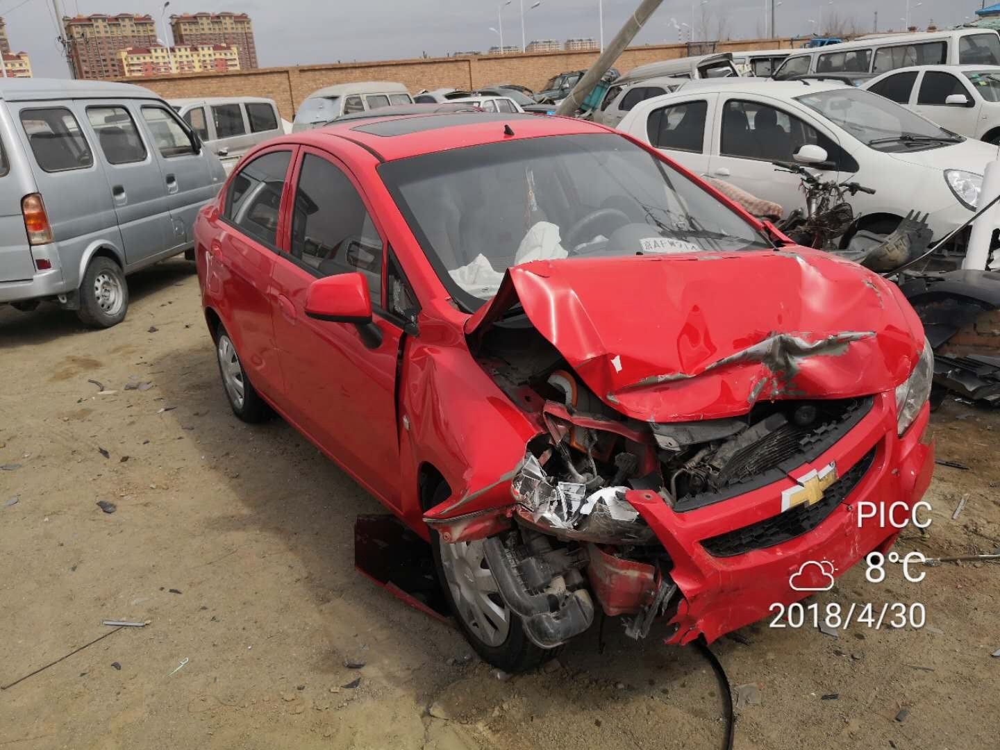
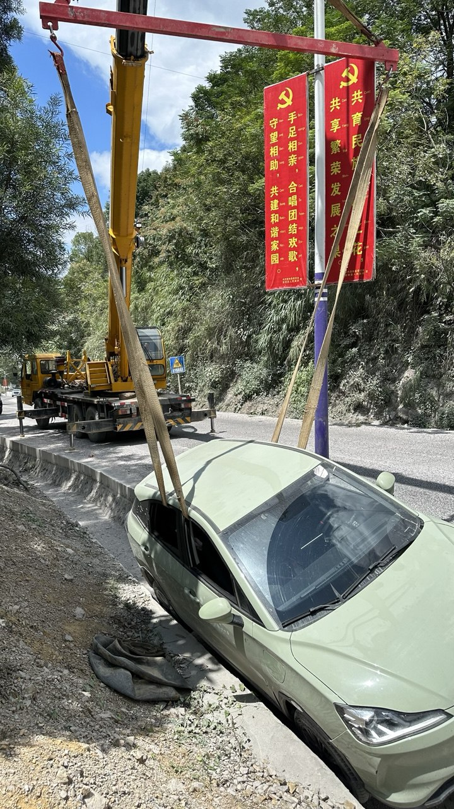

我生命中的車禍 | 原創，AI翻譯
我一生中經歷過數次車禍，最嚴重的一次發生在2018年4月，那時我才剛考獲駕駛執照一個月。當時我正驅車前往內蒙古錫林浩特，以時速約100公里與妻子同行。駛出高速公路收費站後，由於該處並無彎道而是筆直延伸，我誤以為仍在高速公路上，因此完全沒有減速。突然間，眼前出現了一個十字路口。
我的車輛撞上一輛正在轉彎的白色汽車，整輛車被撞退約10米。現場一片混亂——對方車輛被推撞至路中央分隔欄。幸好我繫了安全帶，身體毫髮無損，但妻子的肩膀卻因此受傷。
那輛白色汽車受損嚴重，我上前查看狀況時，非常擔心造成他人重傷。只見車內僅有一名男性駕駛者，頭部正在流血，我隨即呼叫救護車並報警處理。
其實我們相當幸運。在撞車前，原本有輛大貨車行駛在我們前方，值得慶幸的是貨車車速夠快而與我們錯開。否則若我們的車子捲入貨車底盤下方，後果將不堪設想。
事後，我那輛半個月前才購入的二手車的原車主保險公司提供了協助。警方調查發現白色轎車駕駛體內酒精濃度嚴重超標，次日判定雙方各負50%責任。
這場車禍成為我終生難忘的教訓，後來發生的交通事故都只是小擦撞。我深感慶幸生命中的車禍都未造成致命傷害。在此記錄這段經歷，祈願往後人生少些車禍陰影，也祝你平安順遂。

來源：自行拍攝

來源：自行拍攝

來源：自行拍攝

來源：自行拍攝

來源：自行拍攝